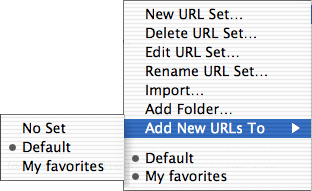
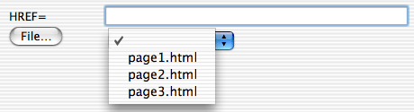
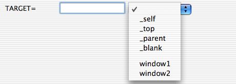
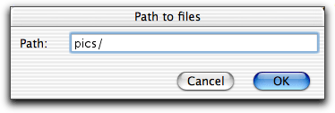

 The URLs in the popup menu in the attribute dialog, shown below, is stored in what is called URL sets. The submenu provides a number of functions to maintain the URL sets.
Similarly Alpha saves the names of the frame targets, shown below, in frame target sets. These are managed using the menu.


Here we explain the functions in the submenu. The submenu provide exactly the same functions for the frame target sets, except that the two functions and is only available for URL sets.
In the URLs menu shown above there are two URL sets defined, Default and My favorites, which are found at the bottom of the menu. They are both checked, which means that they are currently active. The URLs in the active URL sets will appear in the URL popup menu in the attribute dialog. Activating and deactivating URL sets is a way to only have the URLs in the popup menu, which are relevant for the web site you are editing currently.
In the submenu you can choose which set new URLs are added to when you enter a URL in an attribute dialog or when you bring up an attribute dialog to edit a tag. URLs are also added to a URL set when you paste a link from a home page window. If you select new URLs will not be added to any set.
The URLs are stored in simple text files with one URL on each line. You edit them as any other text file. Just remember to put exactly one URL a line.
